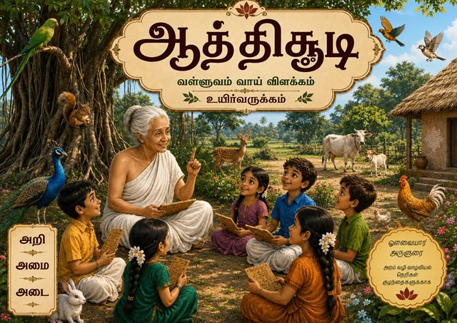
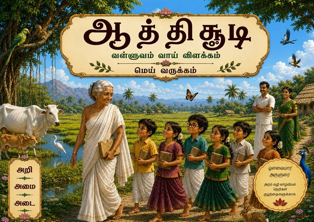
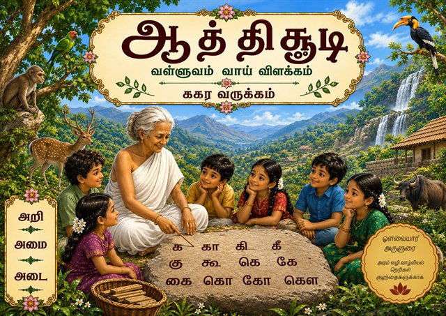
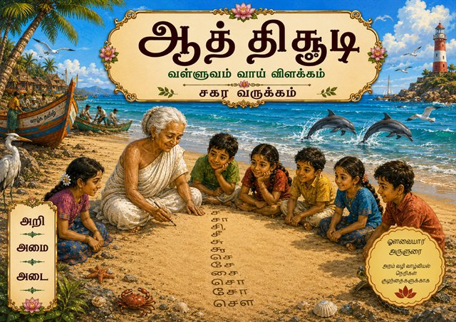
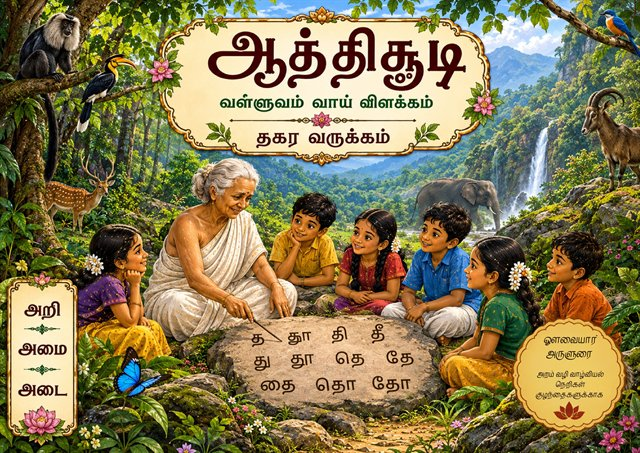
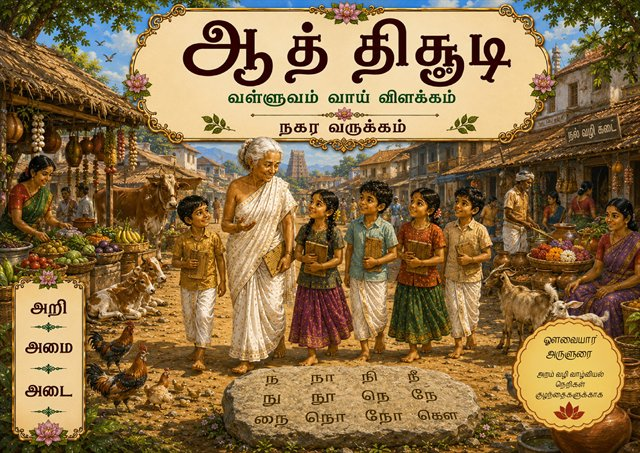
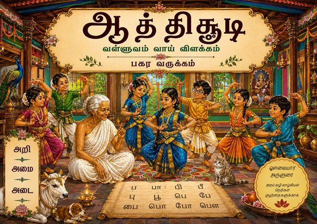
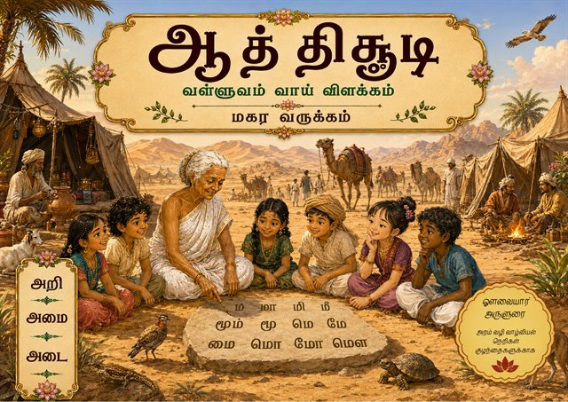
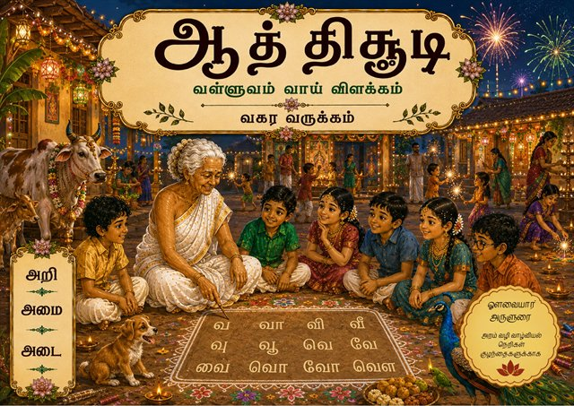

பதிப்பகத்தின் இதயம்
தமிழின் பழமைச் சிந்தனையை சிறுவர் வாசிப்பாக மாற்றும் பணியில்
பொசுமி வெளியீடு ஒரு புத்தக விற்பனை முயற்சி மட்டும் அல்ல. அது மொழி, நீதி, சமூகப் பார்வை, மற்றும் குழந்தை மனம் ஆகியவை சந்திக்கும் இடமாக வடிவமைக்கப்படுகிறது.
பணி
பழமை நூல்களில் ஆழ்ந்து கிடக்கும் நீதிக் கருத்துகளையும் சமூகப் பார்வையையும் தமிழ்ச் செழுமையுடன் குழந்தைகளும் இளமையிலேயே அறிந்து கொள்ளும் வகையில் எளிமையாக்கி புரிய வைப்பது.
நோக்கம்
தன்னையே மட்டும் சார்ந்து நிற்கும் சமகால சுயநலப் பார்வையிலிருந்து மனங்களை சமூகப் பார்வைக்கு திருப்பி, வாழ்வை எவ்வாறு வாழ வேண்டும், எவ்வாறு புகழடைய வேண்டும் என்பதைக் நீதிநூல்கள் வாயிலாக விளக்குவது.
முதல் வெளியீடு
ஆத்திசூடி - வள்ளுவம் வாய் விளக்கம் - உயிர் வருக்கம்
உயிர் எழுத்துகளின் வாசல் வழியாக குழந்தைகள் நீதியையும் மொழிச் செழுமையையும் அணுகும் முதல் அடியாக இந்த நூல் உருவாகிறது.
குழந்தைகளுக்கான எளிய வாசிப்பு, நினைவில் நிற்கும் காட்சியமைப்பு, தமிழின் நன்னெறி வழிகாட்டுதல்.
நூலின் சாரம்
ஆத்திசூடியின் சொற்துளிகளை குழந்தைகள் படிக்கவும் சொல்லிக்கொள்ளவும் மனதில் பதியவும் உதவும் விதமாக விளக்கத் தொடங்கும் நூல் இது. எழுத்துப் பயிற்சியும் வாழ்வுப் பயிற்சியும் ஒன்றாகச் செல்லும் வடிவம் இதன் மையம்.
வாங்கும் இணைப்பு தற்போது தற்காலிகமாக அமைக்கப்பட்டுள்ளது. அதிகாரப்பூர்வ விற்பனை இணைப்பு பின்னர் மாற்றப்படும்.
வெளியீட்டு விவரங்கள்
- ஆசிரியர்
- பொன்னுசுவாமி. டபிள்யூ
- புனைப்பெயர்
- பொசுமி
- நூல் வகை
- குழந்தைகள் நூல்
- முதற்பதிப்பு
- செப்டம்பர்-2026
- நூல் வடிவம்
- A4
- பக்கங்கள்
- 32
- வரைகலை உதவி
- டாக்டர். அருண் கோகுல் பொன்
- அச்சீடு
- விஷ்ணு பைன் ஆர்ட்ஸ், சிவகாசி - 626 189
- ISBN
- 978-93-344-7285-1
- விலை
- ரூ 120/-
முதல் பார்வை
முதல் 4 பக்கங்களின் முன்னோட்டம்
வாசிப்பின் துவக்க உணர்வை நேரடியாகப் பார்ப்பதற்காக, தற்போது வெளியீட்டில் இருக்கும் நூலின் முதல் நான்கு பக்கங்கள் PDF வடிவில் இங்கே இணைக்கப்பட்டுள்ளன.
இந்த முன்னோட்டத்தில்
- நூலின் ஆரம்ப அமைப்பையும் காட்சிநயத்தையும் காணலாம்.
- குழந்தைகளுக்கேற்ற எளிய வாசிப்பு உணர்வை அறியலாம்.
- முழு நூலின் சுவையை உணர ஒரு சுருக்கமான திறப்புப் பக்கம் கிடைக்கிறது.
கீழே உள்ள விருப்பங்களில், PDF-ஐ இணையத்திலேயே inline-ஆகப் பார்க்கலாம், புதிய சாளரத்தில் திறக்கலாம், அல்லது பதிவிறக்கலாம்.
முதல் 4 பக்கங்களை இங்கேயே பார்க்கலாம்
தற்போதைய வெளியீட்டில் இருக்கும் நூலின் முதல் நான்கு பக்கங்கள் கீழே inline-ஆகத் திறக்கப்பட்டுள்ளன. தேவைப்பட்டால் புதிய சாளரத்தில் திறக்கலாம் அல்லது பதிவிறக்கலாம்.
தொடர் வளர்ச்சி
உயிர் வருக்கத்திலிருந்து தொடங்கும் தொடர்ச்சியான வெளியீட்டு பயணம்
இந்த முயற்சி ஒரே நூலில் முடிவதில்லை. ஆத்திசூடி தொடரில் உயிர், மெய், மற்றும் பல வருக்கங்களாக வெளிவரவிருக்கும் அடுத்த நூல்கள் விரைவில் இங்கே சேர்க்கப்படும்.

உயிர் வருக்கம்
இப்போது கிடைக்கும் முதல் நூல்

மெய் வருக்கம்
விரைவில் வெளியாகும் அடுத்த நூல்

ககர வருக்கம்
தமிழெழுத்து பயணத்தின் விரிவாக்கம்

சகர வருக்கம்
கடல்சூழ் கற்பனை உலகத் தொடர் வடிவம்

தகர வருக்கம்
இயற்கையும் எழுத்தும் இணையும் காட்சி மொழி

நகர வருக்கம்
சந்தை வாழ்வோடு மொழி நினைவூட்டும் வடிவம்

பகர வருக்கம்
நடன ஆற்றலுடன் வடிவெடுக்கும் தொடர்காட்சி

மகர வருக்கம்
பரந்த காட்சியியல் பின்புலத்தில் எழுத்துப் பயணம்

வகர வருக்கம்
பண்டிகைநயத்துடன் நிறைவூட்டும் தலைப்பு உலகம்
தொடர்பு & வெளியீடு
பதிப்பகத்தை நேரடியாக அணுகலாம்
சுய வெளியீட்டு மனநிலையுடன் இயங்கும் இந்த முயற்சி, வாசகர்களுடனும் ஆசிரியர்களுடனும் நேரடி உறவை வளர்க்கிறது.
பொசுமி வெளியீடு
18-1-K, காரவிளை,அனந்தநாடார்குடி அஞ்சல்,
குமரி மாவட்டம் - 629201.
தொலைபேசி & WhatsApp
+91 93631 76792
வெளியீடு: சுய வெளியீடு
படைப்புக் குழு
ஆசிரியர்: பொன்னுசுவாமி. டபிள்யூ
புனைப்பெயர்: பொசுமி
வரைகலை உதவி: டாக்டர். அருண் கோகுல் பொன்
அச்சீடு: விஷ்ணு பைன் ஆர்ட்ஸ், சிவகாசி - 626 189
ISBN
978-93-344-7285-1